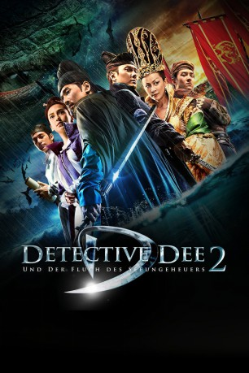
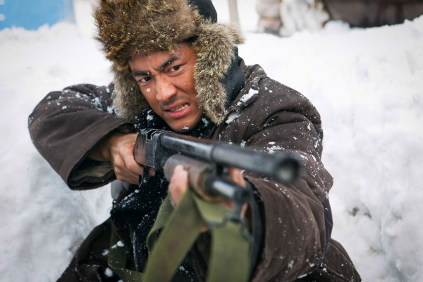

#2618 Detective Dee und der Fluch des Seeungeheuers
 
 IMDB-Wertung: 6.5 / 10
IMDB-Wertung: 6.5 / 10  Metascore: 0
Metascore: 0 
Der junge Dee kommt in die Hauptstadt, wo er in den Dienst der Gerechtigkeit treten will. Kaiserin Wu, die gerade ihre Regentschaft angetreten hat, beauftragt Detective Yuchi mit den Ermittlungen im Fall des Seeungeheuers, das die Stadt in der Nacht heimsucht. Durch einen Zufall treffen sich Dee und Yuchi und bekämpfen die Kreatur, die gerade eine Prozession angreift, bei der die Kurtesanin Yin geopfert werden soll. Doch Yuchi traut Dee nicht und lässt ihnv erhaften. Als Dee mit Hilfe des Doktors Shatuo fliehen kann, finden die beiden heraus, dass die Oberklasse der Gesellschaft inklusive des Kaisers einem giftigen Tee verfallen sind.
Jahr: 2013
Dauer: 134 Minuten
FSK: 12
Land: China Studio: Koch MediaTonspuren:
Untertitel: Deutsch,
Auflösung: 1080p (1920x808) Größe: 7782 MB
Genre: Action, Drama, Abenteuer, Fantasy
Regisseur:  Hark Tsui
Hark Tsui
Drehbuch: Chia-Lu Chang, Kuo-Fu Chen, Hark Tsui
Soundtrack: Kenji Kawai
Darsteller:
 Carina Lau als Wu Zetian
Carina Lau als Wu Zetian- Mark Chao als Dee Renjie
- Angelababy als Yin Ruiji
 Shaofeng Feng als Yuchi Zhenjin
Shaofeng Feng als Yuchi Zhenjin-  Kenny Lin als Shatuo Zhong
- Kun Chen als Doctor Wang Pu
- Chien Sheng als The Emperor
- Bum Kim als Yuan Zhen
- Dong Hu als Huo Yi
- Shan Zhang als Chusui Liang
- Guoyi Chen als Admiral
- Nan Tie als Bo Qianzhang
- Jie Yan als Kuang Zhao
- Yachao Wang als Zhou Qian
- Jingjing Ma als Touba Lie
- Chao Hsu Lin als Cheng An
- Hao Zhang als Taoist Priest Rui Yun
- Limin Deng als Master Wang
- Guoyin Jiang als Eunuch Lao
- Yulin Gao als Ding Yuanda
- Jiatong Lai als Vice-Admiral
- Jaihui Yan als Vice-Admiral
- Hangyu Tian als Vice-Admiral
- Nuo A. als Tuoba Lie's Man
- Tuli Guer als Tuoba Lie's Man
- Qingjian Wu als Tuoba Lie's Man
- Peng Zhou als Tuoba Lie's Man
- Yuanfeng Gao als Tuoba Lie's Man
- Fucheng Zhang als Tuoba Lie's Man
- Meihui Chen als Ruiji's Maid
- Wenxue Sun als Ruiji's Maid
- Junzhu Zhang als Ruiji's Maid
- Hui Guo als Da Lisi Guard
- Xiaoluo Mo als Da Lisi Guard
- Gangqiang Yang als Da Lisi Guard
- Guoqiang Wu als Da Lisi Guard
- Chao Xu als Da Lisi Guard
- Junjie Guan als Da Lisi Guard
- Mingzhe Song als Da Lisi Guard
- Tanwei Pang als Da Lisi Guard
- Qiankun Ma als Da Lisi Guard
- Teng Zhou als Da Lisi Guard
- Yuzhan Gao als Da Lisi Guard
- Chen Song als Huoyi's Man
- Fanjie Meng als Huoyi's Man
- Jianfeng Chen als Huoyi's Man
- You Zhang als Huoyi's Man
- Rongjian Yang als Huoyi's Man
- Guangchao Liu als Huoyi's Man
- Maoping Zhan als Apprentice to Wang Pu
Datei: X:\HD-Eastern-Collections\Detective Dee\Detective Dee und der Fluch des Seeungeheuers (2013, FSK12, 1920x808).mkv seit 26.11.2015
Festplatte: HD Eastern+Western
 Alle Filme aus Gruppe 'HD-Eastern-Collections\Detective Dee'
Alle Filme aus Gruppe 'HD-Eastern-Collections\Detective Dee'